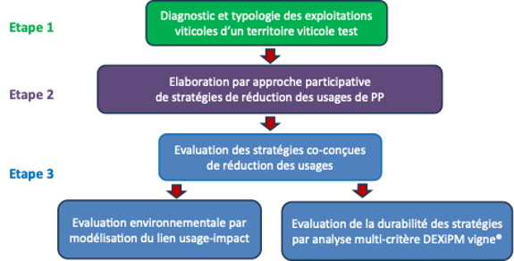
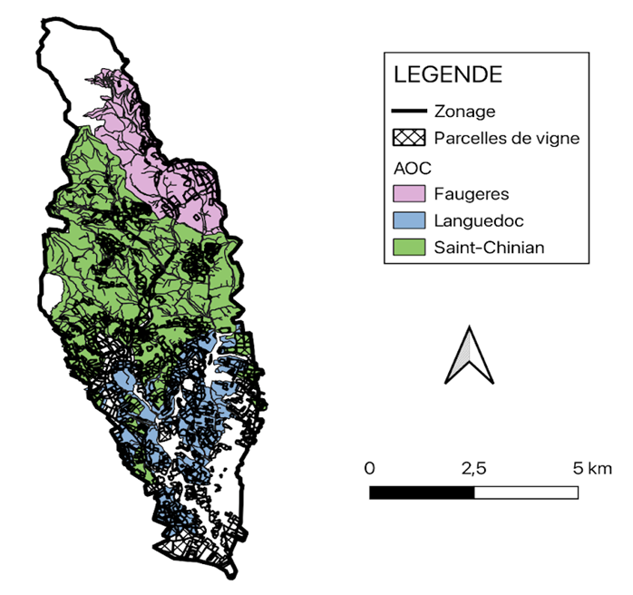

La démarche du projet Ripp-Viti
Une approche en 3 étapes
La démarche du projet a été menée en trois étapes principales (Figure 1).

Un diagnostic initial
Un diagnostic initial des exploitations viticoles existantes sur un territoire d’étude, le bassin du Rieutort (Hérault, France). Cette étape a permis de caractériser la situation viticole de référence du territoire et d’élaborer une typologie des exploitations selon leurs caractéristiques propres, notamment :
- label de production (HVE, AB…),
- mode de valorisation du raisin (cave particulière, cave coopérative),
- taille et structure d’exploitation,
- pratiques de gestion des bioagresseurs.
Une approche participative
Une approche participative a été conduite pour réfléchir et élaborer des stratégies de réduction des usages et impacts des PP adaptées aux différents types d’exploitation viticoles en fonction de leurs contraintes spécifiques (par ex. main d’œuvre, sols…).
Cette approche participative a été menée sous forme de “jeu sérieux”, avec en parallèle un groupe d’experts (acteurs de la filière viticole et du conseil, gestionnaires des ressources en eau, chercheurs) et deux groupes d’acteurs viticoles (producteurs, conseillers viticoles) du bassin du Rieutort.
Le choix d’opérer l’approche participative avec plusieurs groupes de natures différentes avait pour objectif de favoriser une diversité d’ambitions et de points de vue dans la conception des stratégies. Il en ressort plusieurs options de stratégies d’évolution des pratiques et de réduction des usages pour chaque type d’exploitation identifié lors de l’étape de diagnostic.
L’évaluation des stratégies
L’évaluation approfondie des stratégies élaborées aux plans de la durabilité des exploitations et des impacts environnementaux. Cette étape a fait l’objet de nombreux développements méthodologiques, en ayant recours à différents outils.
L’évaluation de la durabilité avec l’outil DEXi PM Vigne
L’évaluation de la durabilité des stratégies a été réalisée avec l’outil d’analyse multicritère DEXi PM Vigne (Metral et al. (2015)).
DEXiPM Vigne® est un outil d’aide à la décision qui évalue la contribution des systèmes de culture à la durabilité des exploitations agricoles pour ses trois piliers économique, social et environnemental.Son fonctionnement repose sur une arborescence détaillée et transparente qui agrège des informations simples (nombre d’interventions culturales, IFT, etc.) pour estimer des variables complexes (ressources utilisées, biodiversité faunistique, etc.). Entièrement qualitatif, ce modèle se renseigne à dire d’experts (ses 65 entrées sont décrites par des classes qualitatives telles que faible, moyen, élevé par exemple) à partir de données, chiffrées ou non, converties en classes qualitatives. L’évaluation des entrées (ou « critère de base ») ne requiert pas de références technico-économiques particulières et ne fait appel à aucun modèle externe. L’outil DEXiPM Vigne note de 0 à 5 la durabilité des exploitations agricoles selon les trois piliers : économique, sociale et environnementale.
Une paramétrisation de DEXiPM Vigne® a été menée pour les types d’exploitations viticoles identifiés sur le bassin du Rieutort et les stratégies d’évolutions proposées par les groupes de travail.
Un modèle de simulation
Un modèle original de simulation, MIPP-V1, a été constitué pour simuler dans un paysage viticole hétérogène les nombreux processus de dispersion des PP depuis leur lieu d’épandage vers l’environnement, afin de pouvoir estimer quantitativement les conséquences des pulvérisations de PP sur la contamination des eaux, des sols et de l’air en milieu viticole.
Ces travaux d’évaluation ont conduit à une estimation de la durabilité des exploitations et des impacts en cas d’application des stratégies élaborées par les groupes ayant utilisé le jeu sérieux. Ils ont donc permis de mesurer si les réductions d’usage des PP posent ou non des problèmes de durabilité des exploitations et dans quelle mesure des réductions d’impact apparaissent et sont suffisantes au regard des normes environnementales en cours.
Le site du Rieutort
Le bassin viticole choisi pour la mise en œuvre du projet Ripp-viti a été le bassin du Rieutort. Localisé en grande partie dans la plaine viticole héraultaise, en bordure des premiers contreforts du Massif Central, ce bassin s’étend sur 45 km2, dont 15,4 km2 sont consacrés à la culture de la vigne (Figure 2).

Il présente une grande diversité de sols (sols d’alluvions récentes et anciennes, sols calcaires sur dépôts miocène et éocène, sols superficiels acides sur schistes…), de terroirs viticoles (AOP Languedoc strict ou AOP Saint-Chinian et Faugères) et de modes de production associés (IGP, AOP en caves coopérative ou caves particulières).
Le bassin du Rieutort regroupe ainsi une large gamme des situations de production viticole que l’on peut rencontrer en zone languedocienne. Il constitue ainsi un modèle pertinent pour l’étude de stratégies d’évolution des pratiques d’usage des produits phytosanitaires à l’échelle d’un territoire. De surcroît, il représente une zone à enjeu au plan de l’impact des usages de produits phytosanitaires puisqu’il fait partie du bassin d’alimentation du captage d’alimentation en eau Potable (AEP) du Limbardie sur la commune de Murviel les Béziers, qui avait été classé en 2009 comme « captage grenelle » dans la liste des captages les plus menacés par les pollutions diffuses.
Le Rieutort fait ainsi l’objet d’animations agri-environnementales par l’Etablissement Public Territorial de Bassin Orb et Libron, qui stimule et appuie le déploiement de MAEC par les viticulteurs et de qualifications type Terra Vitis et Haute Valeur Environnementale par les filières de production présentes (AOP, IGP, caves coopératives…).